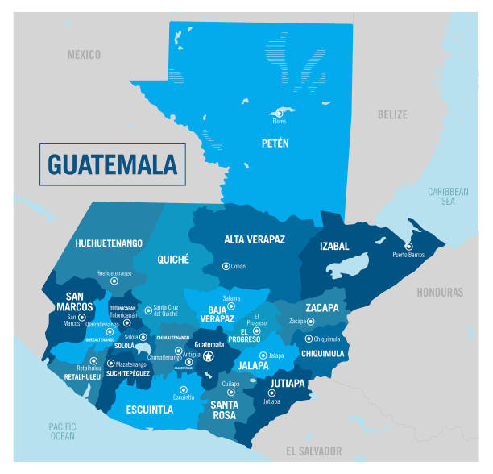
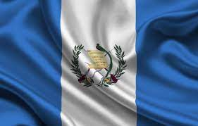

Guatemala is a country in Central America bordering the Northern Pacific Ocean, the Gulf of Honduras, El Salvador, Mexico, Honduras, and Belize. Two mountain chains enter Guatemala from west to east, with a small desert, sand dunes, and hills in-between. The government system is a presidential republic; the chief of state and head of government is the president. Guatemala has a mixed economic system which includes a variety of emerging private freedom, combined with centralized economic planning and government regulation.
